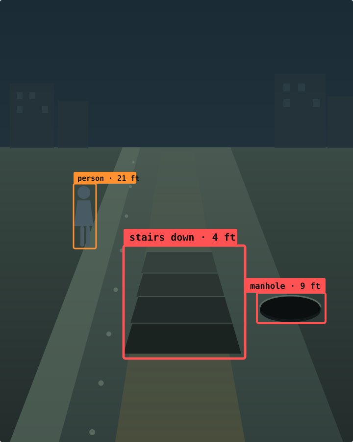

Engineering report · v0.3 · measured on a Pixel 8a
A phone that tells a blind user what is in front of them — fully offline, on a mid-range Android, without flattening the battery.

01 — The thesis
A detector at 5 Hz on a street produces hundreds of true detections a minute, and speaking them is not assistance — it is noise. The documented reason people abandon assistive vision tools is that they talk too much. Restraint is the product, and every architectural decision follows from it.
Ranking is by metres to the side of the walking line, not by bearing. A pole thirty degrees off at eight metres is four metres away and irrelevant; the same thirty degrees at one metre is about to be walked into. Bearing alone cannot tell those apart.
Speech is dropped, never queued. If the audio channel is busy when something new arrives, the new utterance is discarded. A queued announcement describes a place the user has already walked past — and arrives with the authority of a current one.
The same principle draws the line between what warns and what merely answers. A detector that misses something is silent, and silence is something a blind user already knows how to interpret. A language model that is wrong is fluent, and there is no way to catch it by ear. The two live on opposite sides of a wall.
02 — Architecture
Running one model on every frame either flattens the battery or gives bad guidance. There is no setting at which it does neither.
What fraction of captured frames never reach the model. Quantization and backend choice change what one inference costs; gating changes how many happen at all, and is worth more than everything else combined.
Frames reaching the detector. Walking is the honest number — 33× flatters the system, because it describes a phone on a desk. Any battery claim should quote 5.7×.
Models are data, not code. Input size, colour order, normalisation, decoder, labels, licence and distribution policy all live in a YAML manifest — and the same manifests are read by the Android app and the Python implementation. A model benchmarked on a laptop behaves identically on the phone because the two parse the same bytes, not because someone reviewed two implementations and believed they matched.
03 — On the device
Google Pixel 8a, Tensor G3, Android 17. Where something is unproven, it says unproven.
Instrumenting every stage at once produced the result that reordered the whole optimization effort.
Converting the camera frame cost as much as running the detector on it, and nothing had ever measured it — the logs reported inference latency, and inference latency looked fine. The original path did NV21 → JPEG encode → JPEG decode → Bitmap → rotated Bitmap: four full-image passes, two of them a codec, to change a pixel format.
The obvious rewrite made it worse, at 133 ms — a per-pixel
ByteBuffer.get() is a virtual call and there are a million per
frame, losing to libjpeg's native code. Bulk-copying the planes into
primitive arrays first, where the JIT emits plain loads, reached 61 ms. Same
arithmetic, same output, 2.2× apart on where the bytes live.
And everything after detection totals 0.24 ms. All the design attention in this project went into those stages; none of the time does.
| Model | Classes | Size | Latency | For |
|---|---|---|---|---|
sarathi26-320 | 26 | 2.8 MB | 26 ms | Outdoors. Stairs, manholes, tactile paving |
yolo11n-coco-256 | 80 | 2.9 MB | 28 ms | A hot phone, or a long walk |
yolo11n-coco-320 | 80 | 2.9 MB | 47 ms | Indoors. The default |
yolo11s-coco-320 | 80 | 9.8 MB | 120 ms | Most accurate, on a cool phone |
The detector this project trained is both the most
useful and the fastest. Twenty-six classes instead of eighty makes
the head [1,30,2100] rather than [1,84,2100] — less
compute in the final layers and 64% less decode and NMS work every frame. It
is also the only one that knows what a staircase or an open manhole is; COCO
contains neither.
Recall per class. The classes that matter most do best, which is the right way round — and the three that fail are named rather than averaged away.
04 — What running it on real hardware found
None came from unit tests. All would have shipped silently, and they share one shape: code that runs, returns plausible output, and is wrong.
The delegate accepts the entire graph — Replacing 377 out of 377
node(s) — runs at roughly twice the CPU's speed, and returns a
tensor deviating by up to 264.5 absolute where the reference
value is 43.5: 5,717 of 176,400 elements outside tolerance,
across both the box and class rows.
Three probes rule out the usual explanations. Disabling precision loss changes the error from 264.539 to 264.695. Disabling quantized models gives byte-identical wrong output. Forcing OpenGL fails at init. The same holds across four models spanning two architectures.
Without the agreement check this would have shipped: fastest backend, lowest power, and no detections ever — indistinguishable from an empty room to everything downstream. A blind user would have carried a device that felt like it was working.
Box regression survives while the classification head collapses entirely: box rows still peak at 333.8 while class rows go to 0.0000. Post-sigmoid class scores occupy a tiny numeric range, and a per-tensor int8 scale rounds every one of them to zero.
| Variant | Size | ms | Max class score | Verdict |
|---|---|---|---|---|
| fp32 baseline | 10.60 MB | 7.0 | 0.876 | reference |
| dynamic-range | 2.87 MB | 5.7 | 0.878 | shipped |
| float16 | 5.36 MB | 6.3 | 0.876 | won't load on CPU |
| full INT8 | 2.95 MB | 3.7 | 0.000 | broken |
| INT8 + int16 acts | 3.07 MB | 307 | 0.879 | 46× slower |
Had latency been the acceptance criterion — and it very often is — this would have been the obvious choice.
A camera sensor is mounted landscape, so a phone held in portrait delivers frames rotated ninety degrees. The conversion never applied the rotation, so the detector saw a world lying on its side and the ground-plane estimator read side walls as floor contacts.
It never threw. And 0 detections is also what an empty room
reports, so it was read as “pointing at a blank wall” rather than as
“the live path has never once worked”.
The ground-plane estimator turns a box bottom into a distance. Near the
horizon that arithmetic has no resolution left — h/tan(θ)
runs to infinity — so a clock on a wall measured 54.3 m while a car in
the same frame measured 1.2 m. Right count, right label, nonsense
number, and on a phone used with the screen off it would have been
spoken as fact.
Distance depends on camera pitch more than anything else: the same pixel gives 4.4 m at 0° and 1.2 m at 30°. Reading it from the gravity sensor was the fix. Getting the sign backwards was the bug — the device reported a plausible −28° and it was taken as evidence the sensor worked. A chair half a metre ahead would have been announced as “about twenty feet”.
The counter-measures that worked are diagnostics that make ambiguity impossible. Reporting the raw maximum class score separates “the scene is empty” from “the input is broken”. An on-device self-test scores a bundled image whose answer is known. Per-class recall is reported rather than headline mAP. And a backend that disagrees with the CPU is rejected however fast it is. Each exists because something silently wrong got past everything else.
05 — Data
No data was collected with a camera. Every source is public, and every licence had to survive releasing weights under AGPL-3.0.
| Source | Licence | Images | Contributes |
|---|---|---|---|
| WOTR — Walk On The Road | MIT | 13,928 | Pedestrian viewpoint; tactile paving, poles, street clutter |
| Mendeley stair dataset | CC BY 4.0 | 2,996 | Stair edges, with registered depth maps |
| IDD (India Driving) | student use | 41,451 | Held out entirely |
| Open-Manholes | CC BY 4.0 | 677 | The single most dangerous class |
| Roboflow stair sets ×2 | CC BY 4.0 | 646 | Direction-labelled: up vs. down |
IDD's terms are “free for student use” — a restriction, not the absence of one, and this project ships weights to people who are not students. So it is held out of training entirely, and that turned out to be better methodology than the alternative. Every training source is Chinese or Western. Holding out Indian road footage means the model trains on what is available and is evaluated on the country the product is for. The gap is large — 0.597 → 0.219 — and now it is a number rather than an assumption.
06 — Limitations
No trial with a blind user. Everything on this page is an engineering result. None of it is evidence the product is useful, and that only comes from someone who needs it walking somewhere real with it. This is the single largest gap, and it is the first thing a next phase should close.
| Limitation | Detail |
|---|---|
| Depth tier is opt-in | It once announced “step down ahead” four times in fifteen seconds at a desk. The cause is understood and fixed — surface height now comes from a metric anchor rather than fit quality — but it is unvalidated against real kerb footage, so no claim is made about drop-off detection. |
| Three weak classes | barrier 0.000 recall — a labelling problem, not a capacity one. tactile_paving 0.087. bin 0.244. |
| Scene description unevaluated | Every description produced was correct, and “every” means a handful. No hallucination rate, no measurement in the dark. Which is precisely why it sits on the far side of the wall from anything that warns. |
| Hindi OCR unverified | On a real Devanagari sign. The code path is identical and the recogniser is declared, but that is not evidence. |
| One dependency is not fully open | Text recognition uses ML Kit. The unbundled variants ship no proprietary model inside the APK, OCR is optional, and an Apache-2.0 alternative stays in the registry — but this is the least clean dependency and it is named rather than hidden. |
The browser demo runs the same model and the same decoding as the phone, entirely on your device. The video never leaves it.